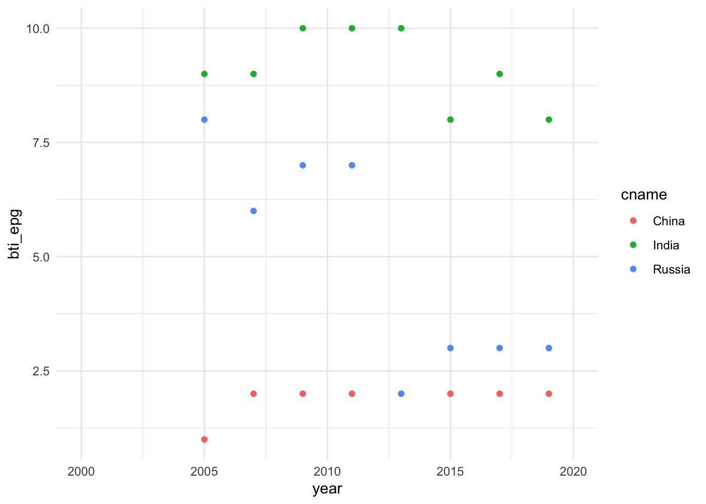

2 マクロデータの取得
今では国際機関，研究組織によって多くのデータが提供されています．そうしたデータを取得するには，その機関・組織にアクセスし，csv,EXCEL等のファイルをダウンロードすることももちろん可能です．しかし，すでに述べたように，Rには，国際機関，研究組織の提供するデータベースからデータを取得するパッケージが多く開発されています．そうしたパッケージを利用すれば，シームレスかつ再現可能な形でのデータの読み込みが可能となります．そこで本資料では，Rパッケージを使った国際機関のデータの取得方法と簡単な利用方法を紹介します． 本資料では最初に，たとえば，penn world table, Word Development Indicatorsのようなマクロ経済統計データベースをとりあげます．
2.1 Penn World Table ― pwt9
Penn World Tableは所得，産出高，投入および生産性に関する情報を提供するデータベースです．これは1950年から2017年の182ヵ国をカバーしています（基準年は2011年）1. pwt9はデータパッケージです．country（国名），isocode（3桁の国コード）, year（年）, currency（各国の通貨単位）の変数の他に，rgdpe（支出面の実質GDP），rgdpo（生産面の実質GDP）,hc(1人あたり人的資本指数)などを含む48の時系列データが提供されています．それではinstall.packages()を使ってRにインストールしましょう．
install.packages("pwt9")Rパッケージptw9はデータだけのパッケージですので，data()関数で読み込みます．スクリプトに次のように入力し，[Run]をクリックしてください．
library(pwt9)データ自体は更新され，現在，バージョン9.1となっています．これを実行することにより，12,376の観察値×52の変数のデータフレームが取得されます． データセットの最終数行を表示させるを使ってこのデータセットの最後の部分を見てみましょう．ちなみにtail()関数と反対の結果を出力するのがhead()関数です。head()関数はデータフレームの冒頭部分を表示させます.
tail(pwt9.1)図8 Penn Wordl Table, pwt9.1
ここでpwt9.1データを使ってジンバブエ経済を観察してみましょう．そのためにジンバブエ経済だけ取り出し，zweというオブジェクトに容れます．
zwe <- pwt9.1 %>%
filter(isocode == "ZWE")ここではジンバブエのマクロ状態―GDP，雇用，価格の成長率・上昇率―をグラフにし観察してみましょう．それぞれの変数名はrgdpe（実質GDP）,emp（就業者数）,pl_c（家計消費の価格水準）です． グラフ作成までの手順は次のようになります．
- 手順1.３つの変数の時系列的推移を描くために，zweからこの３つの変数とyear変数を抽出します．
- 手順2. ３つの変数を成長率に変換します．
- 手順3. 最後に，３つの変数を表示するグラフを作成します．
手順1：特定の変数の取出し – select()関数
select()関数を使ってyearと３つの変数―rgdpe（実質GDP）,emp（就業者数）,pl_c（家計消費の価格水準）―を抽出します．
zwe <- zwe %>%
select(year, rgdpe, emp, pl_c) 手順2：成長率の計算
成長率の計算にあたっては対数差分を利用します．変数を対数に変換するにはlog()を使います．たとえば，log(rgdpe)と入力し，実行すれば（[Run]をクリックすると），Rはrgdpeの対数を返します．さらに，１期前の対数の値との差をとる必要があります.１期前に変換するためにlag()関数 を利用します2．lag(rgdpe)で１期前の実質GDPの値を指定できます．以上を利用すると，対数差分の計算式は以下のように表現されます．
log(rgdpe) - log(lag(rgdpe)) # 成長率（対数差分）の計算この計算式を利用し，mutate()関数を使って成長率変数を作成します．mutate()は既存の変数（列）に関数を適用し，新たな変数を作成する関数です．新たな変数の名前は，この例では既存の変数の冒頭にg_をつけたものにしています．
zwe <- zwe %>%
mutate(
g_rgdpe = log(rgdpe) -log(lag(rgdpe)),
g_emp = log(emp) -log(lag(emp)),
g_pl_c = log(pl_c) -log(lag(pl_c))
)以上をまとめてスクリプトに書くとつぎのようになります．
zwe <- pwt9.1 %>%
filter(isocode == "ZWE") %>%
select(year, rgdpe, emp, pl_c) %>%
mutate(
g_rgdpe = log(rgdpe) -log(lag(rgdpe)),
g_emp = log(emp) -log(lag(emp)),
g_pl_c = log(pl_c) -log(lag(pl_c))
)これを実行する([Run]をクリックする)と，３つの変数とその成長率変数をもつジンバブエデータが作成されます．View(zwe)関数で確認してみてください．
View(zwe)手順3：グラフの作成 グラフの作成にはggplot2パッケージを利用します．
zwe_growth <-ggplot(data = zwe) + # GDP成長率のグラフ作成
geom_point(mapping = aes(x =year, y = g_rgdpe))+
geom_line(mapping = aes(x = year,y = g_rgdpe))+
geom_abline(intercept = 0,slope = 0)+
labs(x="year", y= "Growth rate")+
theme_bw()zwe_inflation <- ggplot(data = zwe) + # インフレ（価格上昇率）のグラフ作成
geom_point(mapping = aes(x = year, y = g_pl_c))+
geom_line(mapping = aes(x = year,y = g_pl_c))+
geom_abline(intercept = 0,slope = 0)+
labs(x="year",y="Inflation")+
theme_bw()zwe_emp <- ggplot(data = zwe) + # 雇用成長率のグラフ作成
geom_point(mapping = aes(x = year, y = g_emp))+
geom_line(mapping = aes(x = year,y = g_emp),lty="dashed")+
labs(x="year",y="Employment")+
geom_abline(intercept = 0,slope = 0) + theme_bw()グラフの作成にあたってはggplot2を利用していますが，このパッケージはtidyverseをインストールすることによってインストールされます．すべてのグラフが同じ構成要素―データセット，座標システムおよびデータ点を表す描画の印― で作成されます．使い方は構成要素を“＋”で重ねることが基本です．
ggplot(data = データフレーム名)+
geom_point(mapping = aes(x = x軸変数,y = y軸変数))+ # データを点で表現します.
geom_line(papping = aes(x = x軸変数,y = y軸変数))+ # データを線で結びつけます.この例ではlabs()を使ってx軸とy軸のタイトルを追加しています．labs()の書式は以下のとおりです．
labs(x = "x軸タイトル", y = "y軸タイトル")さらに，geom_abline()を使って成長率ゼロの水準に直線を追加しています．geom_abline()の使用法は次のとおりです.
geom_abline(intercept = "直線の切片の位置",slope ="直線の傾き")最後に，テーマを指定するtheme_でtheme_bw()を選択し，白黒のテーマを選んでいます．それぞれ３つのグラフを描きますが，ここではRパッケージpachwork を使ってグラフのレイアウトを操作します．
install.packages("patchwork") library(patchwork)patchworkパッケージは操作対象の図を足し算記号（＋）や割り算記号（/）等を使って配置します。詳細について同パッケージサイトを参照してください．library(patchwork)で呼び出したのちに，次のように入力することでグラフを縦に配置します．
zwe_growth/zwe_inflation/zwe_emp2.2 世界銀行World Bank ― WDI
世界銀行が提供する世界開発指標WDI（World Development Indicators）は,グローバルな開発状況と貧困について国際的に比較可能な統計をまとめたものです．このデータベースには，217の経済と40以上の国グループの1,600の時系列指標が収録されています．またその多くの指標のデータは50年以上前までさかのぼることができます.
WDIデータは，さまざまな方法で取得できるようにされています．詳しくは世銀ホームページを参照してください．多少時間がかかりますが，すべてのデータ（ExcelおよびCSV形式ファイル）をまとめてダウンロードすることも可能です．
このWDIデータを利用するためのRパッケージが開発されています .これ以外にもwbstatsというパッケージもありますが，ここではWDIを紹介します． RパッケージWDIは，世界銀行によって運営される40以上のデータベースからデータを検索・ダウンロードすることを可能にしています．そうしたデータベースには世界開発指標(WDI）はもちろんのこと，国際債務統計，Doing Business,人的資本指数，サブナショナルな貧困指標も含まれます．
2.2.1 インストール方法
RパッケージWDIはCRAN上で公開されていますのでインストールにはinstall.packages()を利用します．コンソール画面に次のように入力し，エンターキーを押してください．
install.packages("WDI")WDIを利用するために，スクリプト画面にlibrary(WDI)と入力し，実行[Run]しておきます．
library(WDI)2.2.2 データを探す- WDISearch()
データを探すためにはWDIパッケージに用意されたWDIsearch()関数を使います．この関数は利用可能なWDIデータ系列のコード名，名前，説明，およびデータソースから成る行列を返します．基本的な書式は以下の通りです．
WDIsearch(string = "検索語", field = "name", short = TRUE, cache = NULL)それぞれの引数を説明しましょう．
- string = "“:”“に検索語（文字列）を入力します．WDIsearchは文字列マッチング関数grepを使い，”検索語”を探します．また，caseを無視します（igunore.case=TRUE）ので，正規表現―簡単に言えば，通常の文字―が利用可能です．
- field = "“:”“に検索するフィールドを指定します．利用可能なフィールドは”indicator“,”name“,”description“,”sourceDatabase“,”sourceOrganization“です．たとえば”name" と入力すれば，データのnameの中を検索します．
- short = : 既定値はshort=TRUEです．この場合，指標コードと名前だけを返します．short=FALSEの場合，指標コード，名前，説明およびデータソースを返します．
- cache: WDIcache関数によって作成されるデータリストを返します．省略された場合（あるいはNULLの場合），WDIseachはデータ系列のローカルリストを探します．
たとえば，GDPに関するデータを探すとしましょう．この例では検索文字列を“gdp”とし，探すフィールドを“name”にしています．また，詳しい説明を得るためにshort=FALSEと設定しています．検索結果はオブジェクトgdpに格納されます．
gdp <- WDIsearch(string = "gdp",field = "name",short = FALSE, cache = NULL)この結果をView(gdp)でみると，図10のような，539×5の行列が返されます．ここで重要なのはindicatorです．これは指標コードであり，ダウンロードのさいに利用されます．

図10 WDIsearch()の検索結果
絞り込みが不十分なため，539行のデータ系列が表示されてしまっていますが，スクロールダウンして行くと，448行めにGDP(constant 2010 US$)が見つかります．以下の例においては，これをダウンロードします．
2.2.3 データをダウンロードする- WDI()
データをダウンロードするためにはWDI()関数を利用しますが，利用方法は次のようになります.
WDI(
country = "all",
indicator = "NY.GDP.MKTP.KD",
start = 1960, end = 2020, extra = FALSE, cache = NULL
)この関数は６つの引数をとります．それぞれを簡単に説明していきましょう.
- country = "“:”“の中に，ダウンロード対象の国名（ISO-2文字コードで表現された国名）を入力します．たとえば，”US“,”CA“,”JP“です．複数の国を指定したい場合，c()を利用します. country = c(”US“,”CA“,”JP“) と入力します．なお，”all"と入力すると，すべての利用な国のデータがダウンロードされます．
- indicator = : 指標のコード名を入力します．これは図10のindicator列に表示されているものになります．
- start = :データの開始年です．通常整数フォーマットの年です（ただし，1960以上）．
- end = :データの終了年です．言うまでもなく，start引数に指定した値より大きくなければなりません.
- extra = : TRUEの場合，地域，iso3コード，所得水準といった追加的な変数を返します．
- WDIcache()によって作成されるリストで，extra = TRUEのとき利用されます．
それではWDI()関数を使って，アメリカ経済のGDP(constant 2010 US$)をダウンロードしてみます．このGDPデータのindicatorコードは，上述のとおり，NY.GDP.MKTP.KDです．ダウンロードしたデータはgdp_usという名前をつけたオブジェクトに格納されます．
gdp_us <- WDI(country = "US", indicator = "NY.GDP.MKTP.KD", start = 1990, end = 2019, extra = FALSE, cache = NULL) head()やView()関数を使ってダウンロードしたデータを確認してみてください．最後に，ダウンロードしたGDPデータをggplot2を使ってグラフにしてみましょう．
ggplot(data = gdp_us)+
geom_point(mapping = aes(x = year,y = NY.GDP.MKTP.KD))+
labs(
title = "USA GDP, constant 2010 US$",
y = "GDP"
)+
theme_bw()
これを実行[Run]すると，[Plots]ウィンドウに上の図が表示されます.
2.3 EU統計局Eurostat - eurostat
欧州連合の統計局であるEurostatは,オープンデータサービスを通じて,欧州の人口統計,経済,健康,インフラ,交通などに関する数千ものデータセットを提供しています.Rパッケージeurostatはそうした欧州統計局のオープンデータ取得のためのパッケージです.ヨーロッパ経済を実証分析の対象とする場合,とても有益なパッケージです.
2.3.1 Rパッケージeurostatの利用法
2.3.1.1 パッケージeurostatのインストール
最初に,次のようにコンソール画面に入力しエンターキーを押し,eurostatをインストールします.
install.packages("eurostat") # eurostatのインストールさらに,library()でパッケージeurostatを呼び出し,利用できるようにしておきます.
library(eurostat) # eurostatの呼び出し2.3.1.2 データを探す―get_eurostat_toc(), search_eurostat()
関数get_eurostat_toc()は,eurostatのデータセットの目次をダウンロードする関数です.それでこの関数を使って目次をダウンロードしてみましょう.ここではダウンロードした目次をオブジェクト―euという名前にしています―に容れます.
eu <- get_eurostat_toc() # eurostatの目次取得し,オブジェクトeuに格納スクリプト画面にView(eu)と入力し,実行[Run]し,euの内容を表示させると,図のような,10,004行×8列のデータフレームが表示されます.１列目のtitleはデータセット名,２列目codeはデータセットのコード番号です.このcode列の値は,選択されたデータセットをダウンロードするために使用されます.次のtype列はデータセットかフォルダかどうかを示しています.last update of data列はデータの最新の更新日,last table structure changeはテーブル構造の最新の変更時点,そして次の2つの列はデータの開始時期と終了時期を示しています.
図 eurostat データ一覧
特定の検索ワードを指定し,データを探すためにはsearch_eurostat()関数を使用します.たとえば,search_eurostat()関数の引数に “unemployment “と入力し,失業に関連したデータセットを探してみましょう.ここではその結果をパイプ(%>%)でView()関数につなげてViewウィンドウで表示させています.
search_eurostat("unemployment") %>% # "unemployment"の検索
View() # View()で検索結果を表示 search_eurostat()関数の基本的な書き方は以下のとおりです.
search_eurostat()関数の基本的な書き方は以下のとおりです.
search_eurostat(pattern="検索語", type = "dataset", fixed = TRUE)このように引数にpattern,type,fixedの３つをとります.
- pattern="“,”"の部分に探したいデータに関連したキーワードを入力します.これにより,type=引数で指定した内容に応じて,データセットやテーブルが返されます.
- type=""には,dataset, folder, table, もしくは以上のすべてを指定するallのいずれかを入力します.これにより対応したEurostatのテーブルが出力されます.デフォルトではdatasetです.
- fixedにはTRUE, FALSEの論理値をとります.TRUEの場合,patternはマッチされる文字列となります.より複雑なregexマッチングが必要とされる場合,FALSEをとります.
2.3.1.3 eurostatでデータをダウンロードする―get_eurostat()
データtableをダウンロードするには,get_eurostat()を使います.もっとも基本的な書式は次のようになります.
get_eurostat(id, time_format = "", filters = "", type = "")この関数はおもな引数として次のものをとります.
- id="“:”"にデータセットのコード名を指定します.
- time_format= "“: eurostatフォーマットの時間列をどのタイプに変換するかを指定します.”date“（既定値）と入力した場合,期間の最初のデータによって日付フォーマットDateへと変換されます.”num"を指定すると,数値へと変換されます.テーブルが年次データの場合,デフォルトの日付フォーマットDateを使用するよりも,数値numの時間変数を使用した方が便利です.
- filters = "“:”none"を指定した場合,データセット全体が取得されます.一部分を取得したい場合,ここにリストを入れます（以下の例を参照してください）.
- type= "“: 変数のタイプを指定します.具体的には”code“（デフォルト）もしくは”label"となります.これは変数の値を知りたいときに便利です（以下の例を参照してください）.
それでは具体的な例を使ってデータをダウンロードしてみましょう.ここでは EUの「住宅価格」データを探すことにします.最初に,上で説明したsearch_eurostat()関数を使って取得するデータのidを確認します.その上で,get_eurostat()関数を利用し,イギリス,フランス,スペインの「住宅価格」データを取得してみましょう.
house <- search_eurostat("House",type=“table”) View(house)の結果をみると,13行めにHouse price index - annual data（住宅価格指数,年次データ）が表示されています.これをダウンロードします.
図 キーワード“House”の検索結果
こではダウンロードしたデータをhouse_priceと名前をつけたオブジェクトに容れます.引数time_format= “num”で数値を指定しています.
house_price<-get_eurostat(id="tipsho20",time_format = "num",type = "code")これにより,４つの変数,1,459の観察値がダウンロードされます.
str(house_price) 最初の変数unit（単位）,２番目の変数geoは地理情報,３番目の変数timeは年,最後の変数valuesが住宅価格指数を示しています.しかし,実はこれだけではそれぞれの変数がとる値が何を意味しているかは分かりません,少なくとも分かりづらい表示になっています.とりわけ,unit変数がコード名で表記されているため, “INX_A_AVG”等がわかりません.ダウロードするさいの引数type = “label”としておいた方が良いでしょう.デフォルトではコード名で表示されます（引数type = “code”）.変数の値の意味を知るには変数のラベルを表示させた方が,コード名よりも便利です.
最初の変数unit（単位）,２番目の変数geoは地理情報,３番目の変数timeは年,最後の変数valuesが住宅価格指数を示しています.しかし,実はこれだけではそれぞれの変数がとる値が何を意味しているかは分かりません,少なくとも分かりづらい表示になっています.とりわけ,unit変数がコード名で表記されているため, “INX_A_AVG”等がわかりません.ダウロードするさいの引数type = “label”としておいた方が良いでしょう.デフォルトではコード名で表示されます（引数type = “code”）.変数の値の意味を知るには変数のラベルを表示させた方が,コード名よりも便利です.
house_price <- get_eurostat(id="tipsho20",
time_format = "num",
type = "label")type = “label”でダウンロードした上で,次に,以下のように入力し,変数unitがどのような値を持つか確認してみて下さい.
house_price %>%
distinct(unit)distinct()関数はデータフレームから,()内に指定した変数のうちユニークな,異なった値（行）だけを選択します.つまり,unit変数は1,403行から形成されますが,すべて異なった値をとるわけではありません.ユニークな値は―以下のdistinct()関数の結果をみると―３種類だけです.

distinct()関数の出力結果
2.3.1.4 住宅価格上昇率のグラフを描く
いくつかのヨーロッパ経済をピックアップし,住宅価格（年平均変化率）の推移と１時点における住宅価格変化率をみてみましょう.このために次のような作業を行います.
- 複数の国を指定し,住宅データをダウンロードする.
- unit変数にもとづき年平均変化率を示す値（行）を抽出する.
- ggplot2を利用し,ダウンロードしたデータの時系列グラフを作成する.
- 地理情報を利用し,ヨーロッパ地図上に2018年の住宅価格（年平均変化率）を表示させる.
1.複数の国を指定し,住宅データをダウンロードする
最初に,国コードを容れたベクトルを作成しておきます―isoという名前にします.直接get_eurostat()関数で指定しても良いのですがスクリプトが見づらくなりますので,事前に,この作業を行っておきます.
iso <- c("FR","DE","ES","IT","SE")2. unit変数にもとづき年平均変化率を示す値（行）およびサンプル国を抽出する
house_price_eu <- house_price %>%
filter(unit == "RCH_A_AVG", geo %in% iso)変数unitのとる値のうち年平均変化率を表現するラベルは“RCH_A_AVG”ですのでfilter()関数の中の抽出条件の１つにunit == “RCH_A_AVG”を指定しています.また,国を示す変数はgeoですが,このうちベクトルisoに容れた複数の国を選択することになりますのでgeo %in% isoを利用しています.この表記が意味しているのは,「geo変数がisoベクトルの中のいずれかに等しい国コードをとる行を選択しなさい」ということを意味しています.これによりgeo変数のうちisoベクトルの中の国のいずれかに等しい行だけが選択されます.
これで２つの行の抽出条件にマッチする行だけが選択され,house_price_euというオブジェクトに格納されます.View(house_price_eu)やstr(house_price_eu)を利用し,house_price_euの内容を確認してみてください.
3. ggplot2を利用し,ダウンロードしたデータの時系列グラフを作成する
ggplot(data = house_price_eu, mapping = aes(x = time, y = values))+
geom_point(mapping = aes(shape = geo))+
# 点の形状で国別を示すためにaes()の中でshpae = geoと指定
geom_line(mapping = aes(lty=geo))+
# さらにgeom_line()で線を重ねる.
# 線の種類で国別表示するため,aes()の中でlyt=geoと指定.
labs(x="year", y="Housing price",
subtitle = "Housing price (Annual average rate of change %)")+
theme_bw() このスクリプトを実行[Run]すると,以下の図3-6が出力されます.
ヨーロッパ主要経済の住宅価格の推移,2001~2019
4. 地理情報を利用し,ヨーロッパ地図上に2015年の住宅価格（年平均変化率）を表示させる
各国の住宅価格上昇率の推移を比較しましたが,今度は2015年の１時点をとり各国を比較してみましょう.このためにeurostatの提供する地理空間情報を利用し,2015年の住宅価格をヨーロッパの地図上に描きます
ヨーロッパ経済の住宅価格上昇率,2015年
出力される結果はのようになります.この図を描くための詳しい説明はⅢ-4-3に譲り,ここではスクリプトだけ示しておきます.手順は４つです.
①ヨーロッパの地図データを取得し,そのデータをshp_0という名前をつけたオブジェクトに容れます.
shp_0 <- get_eurostat_geospatial(resolution = 10, nuts_level = 0, year = 2016)②次に,上で取得した住宅価格データからヨーロッパ諸国と2015年のデータを抽出します.
そしてその結果をhousing2015というオブジェクトに容れます.最初に,isoの内容は事前に上記のisoベクトルを,次のように書き換え,サンプル国を拡充しておきます.
iso <- c("AT", "BE", "CY","CZ", "DE", "DK", "EL", "ES", "FI", "FR", "HR", "IE", "IT", "LT","LU",
"LV", "MT", "NL", "PT", "SE")housing2015 <- house_price %>%
filter (unit == "RCH_A_AVG", geo %in% iso, time == 2015)③そして次に,オブジェクトshp_0とhousing2015を結合します.
マージしたデータは地理データと住宅価格データを持つことになります.マージしたデータはmap_housingというオブジェクト名を与えています.２つのオブジェクトの結合にはinner_join()関数を使っています.
map_housing <- inner_join(shp_0,housing2015, by = "geo")④最後に,ggplot2―geom_sf()―を利用し,ヨーロッパ地図上に,住宅価格上昇率を示します.
ggplot(data = map_housing) +
geom_sf(mapping = aes(fill=values),color = "white",size = 0.5)+
xlim(c(-10,37))+
ylim(c(34,70))+
scale_fill_continuous_tableau(palette = "Classic Gray")+
labs (subtitle = "Housing price (Annual average rate of change), 2015",
fill = "% Annual average\nrate of change") +
theme_classic()全体のスクリプトをまとめると,次のようになります.
# ヨーロッパの地理空間データをダウンロード
shp_0 <- get_eurostat_geospatial(resolution = 10,nuts_level = 0,year = 2016)
# サンプル国を指定.
iso <- c("AT", "BE", "CY","CZ", "DE", "DK", "EL", "ES", "FI", "FR", "HR", "IE","IT", "LT","LU", "LV", "MT", "NL", "PT", "SE")
# サンプル国の住宅価格（年平均変化率）データを取得.
housing2015 <- house_price %>%
filter (unit == "RCH_A_AVG", geo %in% iso),time == 2015)
# 地理空間データと住宅価格データを結合.
map_housing <- inner_join(shp_0,housing2015, by = "geo")
# ヨーロッパの地図上に住宅価格を表示.
ggplot(data = map_housing) +
geom_sf(mapping = aes(fill=values),color = "white",size = 0.5)+
xlim(c(-10,37))+
ylim(c(34,70))+
scale_fill_continuous_tableau(palette = "Classic Gray")+
labs(subtitle = "Housing price (Annual average rate of change), 2015",
fill = "% Annual average\nrate of change") +
theme_classic()このようにRパッケージeurostatを利用することで,わずか10数行のスクリプトを書くだけで上のグラフを描くことができます.
2.3.2 応用例 ― 地理空間情報の利用
北欧諸国はミステリー小説の多くの傑作を生み出しています.そうした背景には社会経済的要因はもちろんのこと犯罪を身近なものと受け止める社会不安があるのかもしれません.そこで欧州連合統計局Eurostatが提供する犯罪や暴力に対する不安度を示す指標によって,そうした社会的不安を代理させ観察することにします.そして同指標を視覚的に示すためにEurostatの提供する地理空間情報と結合し,ヨーロッパ地図上に表示します.主な手順は次のようになります,
- 地理空間情報(シェイプ・ファイル)をダウンロードし,ヨーロッパ地図を描く.
- 犯罪・暴力・破壊行為に対する不安度を示す指標をダンロードする.
- 1と2のファイルを結合し,不安度指標を表示した北欧地図を描く.
(1) 地理空間情報のダウンロードとggplot2による描画―sfパッケージ
地理空間データの分析用のRパッケージとしてsfパッケージがあります.sfパッケージは,simple featuresというGIS(geographic information system)データ規格をRで扱うためのパッケージです.Eurostatの提供する地理空間情報データを扱うために,最初に,このパッケージをインストールしておきます. コンソール画面に次のように入力し,エンターキーを押してください.
install.packages("sf")インストールを終えたら,スクリプト画面に次のように入力し,実行[Run]します.
library(sf)このパッケージを利用することによって地理空間データのさまざまな処理が可能となります.
すでに幾度も登場しているggplot2も,バージョン3.0.0以後sfクラスのデータを扱えるようになりました.sfクラスのオブジェクトのプロットには,geom_sf()という関数を使います.
Eurostatの地理空間情報は,国レベルにとどまらず,そしてそれ以上に詳細な行政単位レベルの情報も提供しています.1970年代初頭,Eurostatは,欧州連合（EU）の地域統計を作成するために,EUの領土を分割するための統一された,一貫したシステムとしてNUTS (Nomenclature of territorial units)分類 を設定しました.イタリアを例にとれば,NUTSレベル0はイタリアという国そのものの,NUTSレベル１はNord-Ovest（北西部）, Sud（南部）といった地域,さらにNUTSレベル２はPiemonte（ピエモンテ）, Liguria（リグーリア）, Lombardia（ロンバルディア）といった州, もっとも細かいレベルのNUTSレベル３はTorino（トリノ）, Genova（ジェノバ）, Milano（ミラノ）等の都市空間を示します.これにより,たとえば,個人世帯の可処分所得の地理的分布を調べたいとき,NUTSレベル2すなわち各国の州レベルまで調べること（グラフ表示）も可能です.
それでは最初に,NUTSレベル１と２のヨーロッパ地図を描いてみましょう.地図を描くためにはシェイプファイルshapefileという図形情報と属性情報を入れたファイルをダウンロードする必要があります.RパッケージeurostatはGISGOからヨーロッパの地理情報を取得する関数get_eurostat_geospatial()を用意しています.この関数の基本的な用法は次のようになります.
get_eurostat_geospatial(
output_class = "sf",
resolution = ,
nuts_level = ,
year = 2016
)以下はこの関数がとる引数の概要です.
- output_class = "“:”“に sf, df,もしくはspdfのいずれかの文字列を指定することで返されるオブジェクトのクラスを選択します.sfはsimple features,dfは data_frame, spdfはSpatialPolygonDataFrameを表現します.デフォルトは”sf"です.
- resolution = : 地理空間データの解像度を指定します.利用可能な解像度は60（1:6,000万）,20（1:2,000万）,10（1:1,000万）,03（1:3,000万）,01（1:1,000万）のいずれかです.
- nuts_level = : NUTS分類のレベルをしていします.0,1, 2, 3, allのいずれかをとります.
- year = : NUTSのリリース年を指定します.具体的には,2003, 2006, 2010, 2013, 2016 のいずれかを入力します.
それでは地理空間情報をダウンロードしてみましょう.ここではNUTSレベルの異なる２つのオブジェクトを作成します.
shp0 <- get_eurostat_geospatial(output_class = "sf", resolution = 10, nuts_level = 0, year = 2016)
# NUTS分類のレベル0で地図情報を取得し,オブジェクトshp0に容れるshp2 <- get_eurostat_geospatial(output_class = "sf", resolution = 10, nuts_level = 2, year = 2016)
# NUTS分類のレベル2で地図情報を取得し,オブジェクトshp2に容れるオブジェクト―shp0, shp2―は,引数output_class=“sf”で指定していますのでsfクラスです. geom_sf()はsfクラスのオブジェクトを扱いますから, この指定が必要となります（ただし,デフォルトでもsfクラスですから,指定しなくとも結果はsfクラスのオブジェクトとなります）.
NUTSレベル0は国単位を意味します.NUTSレベル２は,上述のように,イタリアで言えばロンバルディアといった州レベルの行政単位まで描かれます. ヨーロッパの地図情報が取得できましたので,ggplot2を利用しヨーロッパ地図を描いてみましょう.ggplot2にはsfクラスのオブジェクトを描くためにgeom_sf()が開発されています.グラフの作成はこれまで紹介したggplot2の利用方法に同じです.基本はggplot(オブジェクト名)+geom_sf()です.
ggplot(shp0)+ # オブジェクト名を入力
geom_sf() # sfクラスのオブジェクトを指定これだけでヨーロッパ地図がプロット画面に出力されます.しかし,かなり広いヨーロッパ地域が表示されてしまいます.そこでx軸,y軸の範囲を限定し,わたしたちが通常目にするヨーロッパを描くとしましょう.そのためにはxlim()を利用し,x軸の範囲を決定します.xlim（c（西に-10度, 東に37度））のように東西の経度を入力します.y軸の範囲も同様に,ylim(c(,))を利用し,緯度を入力します.あるいはggplot2のcoord_map()という関数を使っても良いでしょう.引数xlim=()で経度,ylim=()で緯度の範囲を指定できます.たとえば,coord_map(xlim = c(-30, 45), ylim = c(30, 75))と入力することによってヨーロッパ地域を指定することができます.
nuts0 <- ggplot(shp0) +
geom_sf()+
xlim(c(-10, 37))+
ylim(c(34, 65))わずか数行の入力で図3-8のようなヨーロッパ地図を描くことができます.あわせてNUTレベル2の地図も描いてみましょう.上述のグラフ作成との違いはggplot()にsfオブジェクト名shp2を指定するだけです.
nuts2 <- ggplot(shp2) +
geom_sf()+
xlim(c(-10, 37))+
ylim(c(34, 65)) 次に,北欧地域だけを描くには,x軸範囲とy軸の範囲を以下のように限定すれば,北欧地域だけの地図を描くことができます.
次に,北欧地域だけを描くには,x軸範囲とy軸の範囲を以下のように限定すれば,北欧地域だけの地図を描くことができます.
n_euro <- ggplot(shp0)+
geom_sf()+
xlim(c(0,32))+ # 北欧地域の範囲を経度で指定
ylim(c(54,70))+ # 北欧地域の範囲を緯度で指定(2) 犯罪・暴力・破壊行為に対する不安度データのダウンロード
次に,犯罪や暴力に対する不安度データを地図上に表示するために,犯罪に関連するデータを探します.これはすでに紹介したsearch_eurostat()関数を利用します. “crime（犯罪）”をキーワードにデータを探してみましょう.
search_eurostat("cime",type="table") %>%
View()上のスクリプトを実行すると,search_eurostat()の結果をView()関数に渡しているため,crimeに関連した検索結果が表示されます.関連するデータテーブルは１つだけで##sdg_16_20##というファイルです.このデータは地域における犯罪・暴力・破壊行為を報告した人の比率を示しています.そうした点では人々の犯罪や暴力に対する不安度を代理する指標として良いでしょう.
次に,データ・テーブルsdg_16_20をダウンロードし,結果をcrimeというオブジェクトに容れます.
crime<-get_eurostat(id="sdg_16_20",time_format = "num")これによりヨーロッパ諸国の犯罪・暴力・破壊行為の報告者比率データを取得できます.ここから第１に,北欧４カ国とバルト３国の７ヵ国だけを抽出します.このために変数のgeoの値が“DK,”“SE,”“NO,”“FI,”“LV,”“EE,”“LT”のどれかをとる行を抽出します.
filter(geo %in% c("DK","SE","NO","FI","LV","EE","LT"))ここで“geo %in% c()”は「geo変数がc（国コード）の中のいずれかに等しい国コードをとる行を選択しなさい」を意味しています.また,このデータは,incgrpという変数を持っていますが,これはincome group（所得グループ）を示し,所得階層別情報を提供しています.しかし,ここでは所得階層別情報は使いませんのでincgrp変数のうち値がTOTALの行だけを抽出します.そこで上の抽出条件にくわえて,次の抽出条件も入力します.
filter(incgrp == "TOTAL")２つの抽出条件をあわせると,次のようになります.
filter(geo %in% c("DK","SE","NO","FI","LV","EE","LT"), incgrp == "TOTAL”)さらに,時間も2017年に指定し ― time == 2017 ―,最終的に次のように入力します.
ne_crime <- crime %>%
filter(time == 2017, geo %in% c("DK","SE","NO","FI","LV","EE","LT"), incgrp == "TOTAL")filter()の基本コードはfilter(データフレーム名,抽出条件)ですが,ここではパイプ(%>%)を利用し,データフレームcrimeを関数filter()に渡していますのでデータフレーム名が省略されています.
以上で,北欧地域の犯罪や暴力に対する不安度を示す指標が取得できました.これを地図上に表示させるために,地図情報の入ったshp0と結合します.
(3) シェイプファイルshp0と犯罪データファイルne_crimeの結合
ここではヨーロッパの地図情報の入った“shp0”ファイルと,北欧地域の犯罪不安度情報の入った“ne_crime”ファイルを結合します.データフレームの結合にあたってはinner_join()関数を使います.ジョイン_join()は２つのデータテーブルの変数を結合します.inner_join()はby= “キー変数”にしたがって,キーの値が等しい観察値が結合されます.したがってキー変数にマッチしない観察値は除外されます.
inner_join()のもっとも簡単な書き方は次のようになります.２つのデータフレームa,bがある場合,
inner_join(データフレームa,データフレームb, by = "キー変数")それではinner_join()を利用し,shp0とne_crimeを,両データフレームに共通のgeo変数を基準に結合します.その上でshp_neというオブジェクトに容れます.
shp_ne <- inner_join(shp_0, ne_crime, by = "geo") これで不安度指標と地理空間情報の入った,74行×17列のデータフレームが作成されました.残りの作業はggplot2を使って,図3-9のような不安度指標を色の濃淡で示した北欧地図を描くだけです.
shp_neはsfクラスのオブジェクトです.このため描画にあたってはgeom_sf()関数に渡すだけです.この場合,何よって色分けするかをaes() で指定します.この例では,犯罪・暴力・破壊行為の報告者比率を示すvalues変数の値の大きさで色分けします.このために fill = valuesとします.
具体的には,まず最初に,ggplot()にデータフレーム名を指定します.
ggplot(shp_ne) +次に,geom_sf()関数を使ってデータを地図に描きますが,変数valuesを地図上の色の濃淡で表現するために,aes(fiill = )で指定します.
geom_sf(mapping = aes(fill=values),color = "white",size = 0.5)+value変数は犯罪・暴力・破壊行為の報告者比率です.さらに,color = “”でボーダー（国境）をwhite(白)で描き,その線の太さをsize = で指定しています.これで基本的な作業は終わりです.実行すると,犯罪・暴力・破壊行為の報告者比率がデフォルト（既定値）の色の濃淡によって描かれた北欧地図が出力されます. この例ではさらに,scale_fill_continuous_tableau()を使って犯罪・暴力・破壊行為の報告者比率を描く色の濃淡をグレイに変更します.この関数によって連続したカラースケールを指定することができます.引数palett = “”部分に “Blue,” “Red”のように入力します.ここでは白黒印刷にあわせ,グレイの色を採用しています.
scale_fill_continuous_tableau(palette = "Classic Gray")+次に,labs()を使ってタイトルをつけます.
labs(title = "The share of the population who reported \nthat they face the problem of crime, violence or vandalism, 2017", fill = "% the respondent \nfeels crime") +英文タイトルの中のthatの前に“"と”n“が挿入されていることに気づいたと思います.これはその部分で文書の改行を命令する記号です.また,fill = “”によって色の濃淡の表示するバーのタイトルを指定しています. 最後に,背景のテーマを設定します.
theme_classic()以上のスクリプトをまとめると,つぎのようになります,
ggplot(shp_ne) +
geom_sf(aes(fill=values),color = "white",size = 0.5)+
scale_fill_continuous_tableau(palette = "Classic Gray")+
labs(title = "The share of the population who reported \nthat they face the problem of crime, violence or vandalism, 2017", fill = "% the respondent \nfeels crime") +
theme_classic()これを実行すると,次のようなグラフが描かれます.

犯罪や暴力,破壊行為の問題に直面していると回答した人の割合（％）
見られるように,サンプル経済の中では編集者ミカエル の活躍するスウエーデンがもっとも高く,これにリガの犬 が蠢くラトビア等のバルト３国が続きます.バルト海を挟む諸国において犯罪や暴力,破壊行為の問題に直面している人々が多そうです.こうした社会的不安が犯罪小説の創造に寄与しているのかもしれません.
(4) 地理空間情報― NUTSレベル3の利用
さらに,スウェーデンに注目し,こうした犯罪の背景―犯罪や暴力,破壊行為―を地域レベルでみてみましょう.これまで地理空間をNUTSレベル０としてきました.つまり,国単位で情報を扱っていました.次に,北欧社会の中でも,犯罪や暴力,破壊行為の問題にもっとも強く直面しているスウェーデンに注目し,NUTSレベルを3までブレークダウンし,より詳細な犯罪情報を地図上に描いてみます.
上で利用したデータはNUTSレベル２の情報を提供していませんが,犯罪に関連したNUTSレベル２,3のデータとしては「犯罪記録件数」(Crimes recorded by the police by NUTS 3 regions)があります.このデータをget_eurostat()を利用し,ダウンロードします.これをcrimeという名前をつけたオブジェクトに容れます.本データのidはcrim_gen_regです.
crime <- get_eurostat(id = "crim_gen_reg")最初に,スウェーデンをピックアップします.このためgeo変数にfilter()をかけますが,抽出条件をgeo == “SE”とすると,スウェーデンの国内の行政単位のデータ―たとえば,SE1,SE2という記号で表示―は抽出条件に合致しないため,削除されてしまいます.そこで最初に,str.detect()関数を使って“SE”という文字列を持つgeo変数の行を探します.そしてそれと一致したgeo変数の行を抽出します.
filter(str.detect(geo,"SE"))str.detect(geo, “SE”)はgeo変数が “SE”という文字列を含む場合,真TRUEを返します.これにfilter()を適用することによって,str.detect()関数がTRUE返す行を抽出します. データは2009年と2010年のみですが,ここでは2010年を採用します.
filter(Date == "2010-01-01")以上,必要な行の抽出が終わりです.これまでのスクリプトをまとめると,以下のようになります.抽出結果をcrime_sweという名前をつけたオブジェクトに容れてあります.
crime_swe <- crime %>%
filter(str_detect(geo, "SE"), time == "2009-01-01") 次に,NUTSレベル３のデータをダウンロードし,shp3という名前のオブジェクトに容れます
shp3 <- get_eurostat_geospatial(resolution = 10, nuts_level = 3, year = 2016)
# NUTS分類のレベル3で地図情報を取得し,オブジェクトshp3に容れるそれでは,crime_sweとNUTSレベル3のシェイプファイルをinner_join()関数を使って結合します.そして結合したファイルをshp2_crimeという名前のオブジェクトに容れます.
shp3_crime_swe <- inner_join(shp_2,crime_swe, by = c("NUTS_ID"="geo")) by = “キー変数”の部分がこれまでと異なります.２つのファイルを結合するさいに,異なる変数を利用する場合,上述のようにby = c(“NUTS_ID”=“geo”)とします.NUTS_IDはshp_2の中の変数,geoはcrime_sweの中の変数です.
これで地図を作成するデータが出来上がりました.あとは図3-9を作成した場合と同じようにggplot２を利用します.スクリプトは次のようになります.
ggplot(shp3_crime_swe) +
geom_sf(aes(fill=values),color = "white",size = 0.5)+
xlim(c(7,25))+
scale_fill_continuous_tableau(palette = "Classic Gray")+
labs(title = "Crimes recorded by the police,2010",
fill = "% the number of \ncrimes recorded by the police")+
theme_classic()
スウェーデンにおける犯罪記録件数, 2010
ここでは単純に犯罪件数を表示させているだけですから,スウェーデンの中でも大都市圏―Stockholms県,Västra Götalands県やSkåne県等―で犯罪件数が多いことが理解されます.また図3-10から理解されるように,犯罪件数には地理的な関連があるかもしれません.犯罪が多発する県の隣接する県でも多そうです.これは空間的なデータが相関していることを示唆しており,空間情報を分析するさいに注意を要する点です.
2.4 経済協力開発機構OECD
OECDが提供するデータは、もちろん、OECDのサイトOECD.Stat からも取得できます。同サイトに入ると、左側のウィンドウにテーマ別データ一覧が表示されており、ここから目的のデータを探すことができます。ウィンドウ上部にある検索ウィンドウからキーワード検索も可能です.
しかし、この方法ではRから離れブラウザでデータを検索し、データをダウンロードすることになります。これは煩わしい作業であることは言うまでもなく、データ分析のための再現性も難しくなるかもしれません。こうした問題に対処するために、RパッケージOECDを利用することが推奨されます。このパッケージによってOECDのAPIから動的で再現性の高い方法でデータをダウンロードすることができます.
2.4.1 RパッケージOECDの利用方法
それでは同パッケージをインストールしましょう。コンソール画面に次のように入力し、エンターキーを押してください。
# RパッケージOECDのインストール
install.packages("OECD")パッケージを利用するにはlibrary()で呼び出しておく必要があります。スクリプト画面に次のように入力し、実行[Run]しておきます。
# RパッケージOECDの呼び出し
library(OECD)(1)データを探す
OECDのデータをダウンロードするにはデータ系列のidコードが必要となります。しかし、ほとんどの場合、正確なidコード情報を事前に保有していることは少ないと思います。そこで最初に、利用可能なデータセットとその説明を含むデータフレームをダウンロードし、その上で検索を始めるのがベストの方法です。これはget_datasets()関数で実行できます。
# OECDのデータフレームのリストを取得
get_datasets() %>%
# head()関数でデータフレームの冒頭部分を表示
head()head()関数によって最初の６行を表示させています。全体で1,392行×2列のデータフレームが取得されます。１列目はデータセットのid、２列目titleはデータセットのタイトル名です。これによってOECDにおいて、どのようなデータセットが利用可能かが分かります。
データセットの検索方法としてはsearch_dataset()関数を使ってキーワードで検索する方法もあります。たとえば、失業“unemployment”をキーワードに検索してみましょう。これを実行すると、コンソール画面に“unemployment”を含んだデータ等の一覧が表示されます.デフォルトでは大文字小文字を区別しません。
search_dataset("unemployment")(2) データセットのダウンロード
それでは最初のデータセットDUR_I―Incidence of unemployment by duration (期間別の失業者発生比率％)―をダウンロードしてみましょう.データのダウンロードにはget_dataset()関数を使います.基本的な使い方は次のようになります,
get_dataset("dataset", filter = NULL, start_time = NULL, end_time = NULL,
pre_formatted = FALSE)この関数がとる主要な引数は以下のとおりです.
- dataset : ダウンロードするデータセットのidを入力します.
- filter= : NULLの場合、すべてダウンロードします.
- start_time = : データの開始時点.
- end_time = : データの終了時点.
この関数を使ってDUR_Iデータを取得し、それをunempというオブジェクトに容れるとします.もっとも簡単なコードは次のとおりです.
unemp<- get_dataset("DUR_I")str(unemp)でデータフレームの中をみると、8変数、155,924の観察値のデータセットがダウンロードされたことが分かります（図14）.str()関数はデータフレームの変数（列）や観測値（行）についての情報を出力させる関数です.
str(unemp)## tibble [160,111 × 8] (S3: tbl_df/tbl/data.frame)
## $ COUNTRY : chr [1:160111] "AUS" "AUS" "AUS" "AUS" ...
## $ SEX : chr [1:160111] "MW" "MW" "MW" "MW" ...
## $ AGE : chr [1:160111] "1519" "1519" "1519" "1519" ...
## $ DURATION : chr [1:160111] "UN1" "UN1" "UN1" "UN1" ...
## $ FREQUENCY : chr [1:160111] "A" "A" "A" "A" ...
## $ TIME_FORMAT: chr [1:160111] "P1Y" "P1Y" "P1Y" "P1Y" ...
## $ obsTime : chr [1:160111] "1978" "1979" "1980" "1981" ...
## $ obsValue : num [1:160111] 20 19.3 21 22.8 21.4 ...引数を指定した形でデータをダウンロードしてみましょう.引数filterを使って日本とドイツのデータ、引数start_tim,end_timeで期間を1990年から2019年のデータをダウンロードするとします.このためにはスクリプトに次のように入力するだけです.
unemp <- get_dataset("DUR_I",filter=list(c("JPN","DEU")),
start_time = 1990,end_time = 2019)また、たとえば、filter = “age”のように、変数についてもfilterを適用できます.
(3)データ構造を調べる
ダウンロードしたデータの内容は、上述のように、str()関数やView()関数を利用して確認することができます.しかし、これだけではそれぞれの変数が何を意味するのか分からない場合があります.たとえば、DURATION変数が「（失業）期間」を表現していることは分かりますが、しかし、その変数がとる “UN1,” “UN3”といった値が何を意味しているかは分かりません.このためデータ構造をチェックする必要があります.
データ構造のチェックにはget_data_structure（）関数を利用します.同関数は指定したデータシリーズの変数名とその説明を返します.
# DUR_Iのデータ構造の説明を取得、data_strに容れます.
data_str<-get_data_structure("DUR_I")
# str()関数でdata_strの中を見ます.
str(data_str,max.level = 1) ## List of 12
## $ VAR_DESC :'data.frame': 12 obs. of 2 variables:
## $ COUNTRY :'data.frame': 53 obs. of 2 variables:
## $ TIME :'data.frame': 53 obs. of 2 variables:
## $ SEX :'data.frame': 3 obs. of 2 variables:
## $ AGE :'data.frame': 7 obs. of 2 variables:
## $ DURATION :'data.frame': 5 obs. of 2 variables:
## $ FREQUENCY :'data.frame': 1 obs. of 2 variables:
## $ OBS_STATUS :'data.frame': 16 obs. of 2 variables:
## $ UNIT :'data.frame': 319 obs. of 2 variables:
## $ POWERCODE :'data.frame': 32 obs. of 2 variables:
## $ REFERENCEPERIOD:'data.frame': 100 obs. of 2 variables:
## $ TIME_FORMAT :'data.frame': 5 obs. of 2 variables:このさい、表示レベルをmax.level = 1を使い、１に指定しています.max.level=を利用せずに、str(data_str)と入力しても、類似した情報が得られますが、出力画面が煩雑になるので、この例ではmax.level=1に抑えています.
コンソール画面に上のように入力し、エンターキーを押すと、図？？？のような出力結果が得られます.DUR_Iの説明を見ると、VAR_DESCを初めとし、あわせて12の変数があることが分かります.ここでDURATION変数の詳細を確認してみましょう.コンソール画面にdata_str\(DURATIONと入力し、エンターキーを押してみてください. “\)”記号はデータフレームの中の変数を指定する方法です.つまり、data_str$DURATIONは「データフレームdata_strの中の変数DURATIONを指定」を意味します.
#データフレームdata_strの中の変数DURATIONを指定.
data_str$DURATION ## id label
## 1 UN1 < 1 month
## 2 UN2 > 1 month and < 3 months
## 3 UN3 > 3 month and < 6 months
## 4 UN4 > 6 month and < 1 year
## 5 UN5 1 year and overこれにより変数DURATIONのとる値が何を意味しているかを示した一覧が出力されます.これをみると、変数DURATIONの値“UN1”は１月未満,“UN2”は１月以上３ヶ月未満の失業期間を示すことが分かります.
続けて変数AGEのデータ構造も確認しておきましょう.コンソール画面にdata_str$AGEと入力し、エンターキーを押します.
#データフレームdata_strの中の変数AGEを指定.
data_str$AGE ## id label
## 1 1519 15 to 19
## 2 1524 15 to 24
## 3 2024 20 to 24
## 4 2554 25 to 54
## 5 5564 55 to 64
## 6 6599 65+
## 7 900000 Totalこのように、AGE変数はid列に記載されているように1519や1524など７つの値をとります.そしてlabelに示されているように、それぞれ年齢階層に対応しています.たとえば、6599という値は65+と表示されていますので、65歳以上ということが分かります.つまり、65歳以上の失業者数です.年齢に関係ない総数は900000という数値で表現されています.
さらに、失業者の性別を表現する変数SEXをチェックしておきましょう.
# データフレームdata_strの中の変数SEXを指定
data_str$SEX ## id label
## 1 MEN Men
## 2 WOMEN Women
## 3 MW All persons変数SEXは３つの値をとることが分かります.MEN(男性)、WOMAN(女性)およびMW(両者の合計)です.
2.4.2 応用例―長期失業者の推移を可視化する
上でチェックしたデータ構造を利用し、失業問題でとりわけ問題となる長期失業者の推移を調べてみましょう.この例では最初にドイツ、フランス、日本およびアメリカの長期失業者の推移を比較します.その上で日本経済の長期失業に焦点を当てて考察します.
(1)長期失業者の抽出 ― filter(), select() 最初に、フランス、ドイツ、日本およびアメリカのデータをダウンロードします.そしてそれをunempというオブジェクトに格納します.
unemp <- get_dataset("DUR_I", filter = list(c("DEU","FRA","JPN","USA")),
start_time = 1990,end_time = 2019)次に、変数DURATIONを使って失業者に占める長期失業者のシェア（%)だけを抽出します.前掲の図16のように長期失業者（１年以上）は“UN5”の値をとります.また、ここでは年齢別は無視します.図18から理解されるように、年齢階層を無視した場合、変数AGEは“900000”の値をとります.さらに、男女合計の失業者を利用しますので変数SEXは“MW”の値をとるものを選択します.結果をlong_unempと名付けたオブジェクトに容れます.なお、DURATION, AGE,SEX変数の値は文字列ですので,“”を付けて指定する必要があります.条件にあった行（観察値）の抽出にはdplyrのfilter()関数を利用します. この関数の書き方はfilter(データフレーム名,抽出条件)です.ここではパイプ(%>%)でデータフレーム名をfilter()関数に渡しますので、filter()関数の引数は抽出条件だけを入力します.
long_unemp <- unemp %>%
# filter()関数を使ってDURATIONの値がUN5（失業期間１年以上）, AGEの値が900000（総数）、SEXの値がMW（男女計）を指定
filter(DURATION == "UN5", AGE == "900000", SEX == "MW") これで長期失業者数データを取得できます.View(long_unemp)でデータフレームlong_unempを表示できます.
ここでは長期失業者の推移を検討するだけですので、必要な変数は国名変数CONTRY, 観察時点変数obsTIME,および観察値変数ovsValueの３つだけです.select()関数を使って３つの変数だけを取り出します.上述のコードにさらにselect()関数をパイプ(%>%)でつなげて３つの変数だけを選択します.
long_unemp <- unemp %>%
filter(DURATION == "UN5", AGE == "900000", SEX == "MW") %>%
select(COUNTRY, obsTime, obsValue)select()関数では変数名の変更も可能です.obsTimeをyear、obsValueをvalueという変数名に変更しておきます.これを加えて上のコードを書き直すと次のようになります.
long_unemp <- unemp %>%
filter(DURATION == "UN5", AGE == "900000", SEX == "MW") %>%
select(COUNTRY, year = obsTime, value = obsValue)なお、変数名の変更はrename()関数を使ってもできます.rename（）関数の使い方は
rename(新しい変数名 = 古い変数名)上のコードにパイプ（%>%）でつなげてrename()関数を使うと、次のように書くことができます.
(2) 文字列型から整数型へのデータの型の変更 ― as.integer()
これで３つの変数―COUNTRY, year, value―を持つ、データフレームlong_unempが出来上がりました.このデータフレームをstr(long_unemp)でみると（図9）、国を表現するCOUNTRY変数と暦年を表現するyearが文字列データであることが分かります.「$ COUNTRY: chr」, 「$year: chr」となっていることに気づくと思います.「chr」はcharacterの略で文字列データであることを示しています.つまり、yearは1990, 1991といった数値ですが、Rはこれを文字として理解しています.また、文字列型のデータは“”で囲まれた形で表記されます.
str(long_unemp)## tibble [120 × 3] (S3: tbl_df/tbl/data.frame)
## $ COUNTRY: chr [1:120] "FRA" "FRA" "FRA" "FRA" ...
## $ year : chr [1:120] "1990" "1991" "1992" "1993" ...
## $ value : num [1:120] 38.1 37.3 36.2 34.2 38.5 ...文字列データのままでは以下の処理が難しくなりますので、これを数値データ―整数データ―に変換します.データの型を整数に変換するにはas.integer()関数を利用します.この関数の引数に、データフレームlong_unempの中のyearを指定します.データフレームの中の特定の変数列を指定するには「データフレーム名$変数列名」です.
# year変数のデータの型を文字列型から整数型に変換.
as.integer(long_unemp$year) さらに、この型を変換したデータyearをもとのデータフレームに容れます.
long_unemp$year <- as.integer(long_unemp$year)これは次のような処理を行っています.as.interger（）関数を使ってデータフレームlong_unempの中のyear変数を整数型に変換し、その結果を割当演算子（←）を使ってデータフレームlong_unempの中のyear変数に割り当てます（置き換えます）.コンソール画面でstr(long_unemp)と入力し、エンターキーを押してみてください.
str(long_unemp)## tibble [120 × 3] (S3: tbl_df/tbl/data.frame)
## $ COUNTRY: chr [1:120] "FRA" "FRA" "FRA" "FRA" ...
## $ year : int [1:120] 1990 1991 1992 1993 1994 1995 1996 1997 1998 1999 ...
## $ value : num [1:120] 38.1 37.3 36.2 34.2 38.5 ...図10の“$year : int”において理解されるように、変数yearは文字列型chrから整数型intに変わっています.intはintenger（整数）の略です.また文字列型の変数だったときには年数はすべて“”で囲まれていましたが、変数の型を変更した結果,""も消えています.
(3) 長期失業者のプロット―ggplot2による可視化
それでは４カ国の長期失業者のシェアの推移のグラフを描き、比較してみましょう.グラフの作成にあたってはRパッケージggplot2を利用します.
ggplot2でのグラフの作成方法は,レイヤーをプラス記号（＋）で重ねて行くということがポイントです.最初のレイヤーはもっとも基本的なもので、グラフを描画するための座標平面を作成します.ここでは引数に、利用するデータフレーム名、aes()の中にx軸、y軸に採用するデータを指定します.長期失業者の推移を描くことが目的ですので、x軸の変数にはyear,y軸の変数には長期失業者のシェアvalueを指定します.
ggplot(data = long_unemp, mapping = aes(x = year,y = value))これにデータを線で描画するために、geom_line()のレイヤーを重ねます.そのさい国ごとに異なった線種を使うためにlty =を利用し、lty = COUNTRYと指定します.
geom_line(mapping = aes(lty = COUNTRY))さらに、横軸、縦軸ラベルやタイトルを指定するためにlabs()レイヤーを重ねます.この例ではlabs()によってy軸のタイトル(y=)、サブタイトル（subtitle=）を指定しています.そして最後に、背景の種類を指定し、重ねています.背景はシンプルな白黒背景利用するためにtheme_bw()を使っています.すべてのコードをまとめると、以下のようになります. これを実行すると,グラフが描かれます.
ggplot(long_unemp,aes(year,value))+
geom_line(aes(lty = COUNTRY))+
labs(
y="long-term unemployment (%)",
subtitle = "Share of long-term unemployment ( % of total ) "
)+
theme_bw()
このグラフから理解されるように、2000以前にはヨーロッパでは長期失業が高水準にあり、対照的に、日本とアメリカでは長期失業の水準は低い水準にあったことが分かります.しかし、この構図は1990年後半以降、変化しています.日本経済では長期失業者の割合が急速に高まり、ヨーロッパ水準に近づきつつあります.リーマンショックの影響でアメリカでも一時的に長期失業者が急増しますが、その後は急速に減少して行きます.しかし、日本では高止まりしていることが見て分かります.
現在では、日本でもフランスやドイツのように、職を探し続けても１年以上仕事が見つからない人が３割～４割に達しています.そこで日本経済だけに注目し、さらに詳しくみて行くことにしましょう.長期失業者がどの年齢階層で増加しているのか、また男女別で相違はあるのか、という２つの問題を考えてみます.この問題に答えるために、以下のような３つのグラフを作成します.
グラフのパネル(b)を見ると、長期失業者比率の動きには男女別でそれほど大きな違いは見られないようです.男女ともに長期失業者が1990年台中頃から上昇していきますが、男性正失業者は40パーセント台、女性失業者は20パーセント台で止まりつつあるようです.したがってこうした長期的な動向は男女に共通の要因―たとえば、政策の変化―が影響していると想像されます.しかし、両者の水準は大きく異なり,失業者に占める長期失業者の比率は男性労働者が女性労働者を大きく上回ります.これには男女間の求職意欲の相違、雇用形態の違い、産業別の男女別就業比率等、さまざまな性差に特有の要因が影響としていると思われます.
パネル(c)は年齢別の推移を描いています.特徴的なのは65歳以上の高齢者層（6599）が他の年齢層に比べ一貫して高い水準にあったにもかかわらず、2020年に近づくにつれて減少してきたという点です.これと対照的に、1990年代から中核的な労働力層―2554歳（2554）,5564歳（5564）―の長期失業者比率が上昇してきています.失業の長期化は労働者の技能を引き下げると言われています.今後、この中核労働者層の失業が長期化すれば、労働者の技能の陳腐化ひいては生産性の停滞のいっそうの悪化へといたるかもしれません.
パネル(a)(b)(c)のグラフの作成スクリプトを紹介しておきましょう.
パネル(a)
最初に、get_data()関数を利用し、日本経済の期間別失業者比率をダウンロードします.ここでは日本一カ国ですので、filter = list()の中に日本の国別コードJPNを指定するだけです.また、結果をunemp_jpというオブジェクトに格納します.
unemp_jp <- get_dataset("DUR_I", filter = list("JPN"),start_time = 1990,end_time = 2019)unemp_jpが基本のデータセットになります.最初に、性別、年齢別に関係のなく全体の長期失業者を抽出します.このため、filter()関数により長期失業者を指定します.これはDURATION変数の値が“UN5”と一致するものを選択します.次に、性別は全体ですので、SEX変数において両性の合計を示す“MW”を指定します.最後に、同じく年齢階層に関係なく全体を指定します.このためにAGE変数において値が“900000”のものを選択します.
次に、select()関数によって必要な変数を取り出します.必要な変数はAGE, SEX, obsTime, obsValueの４つです.この４変数の名前をselect()関数の中に入力します.このさい、obsTime, obsValueの名前を、それぞれyear, valueという短い名前に変更しています.これはselect()関数の中で“新しい変数名 = 古い変数名”で変更できます.
long_unemp_jp_totl <- unemp_jp %>%
filter(DURATION == "UN5",SEX == "MW",AGE == "900000") %>%
select(AGE,SEX,year = obsTime, value = obsValue) 最後に、以上の結果をlong_unemp_jp_totlというオブジェクトに格納します.しかし、１つだけ困ったことがあります.str(long_unemp_jp_totl)で確認できるように、year変数は数値データではなく、文字列データとなっています.そこでas.integer()関数を利用し、整数型に変更し、もとのyearに容れます.
long_unemp_jp_totl$year <- as.integer(long_unemp_jp_totl$year)long_unemp_jp_totl\(yearはデータフレームlong_unemp_jp_totlの中のyearを指定しています.“\)”はデータフレームの中の特定の変数を指定するさいに利用する記号です.
これでパネル(a)のグラフを描くためのデータセットが出来上がりました.グラフを描くためにはRパッケージggplot2を利用します.
total <- ggplot(long_unemp_jp_totl,aes(x = year,y= value))+
# データの描画を線に指定
geom_line()+
# データの点の形をshape=によって描画する点の形を指定(2は三角形を意味する).
geom_point(shape = 2)+
labs(
y="long-term unemployment (%)",
subtitle = "(a) Total "
)+
theme_bw()ここではggplot2を利用して描いたグラフを“total <-”によって、totalという名前をつけたオブジェクトに格納しています.グラフをtotalというオブジェクトに入れましたのですぐにはグラフは出力されません.グラフを表示させるにはコンソール画面にグラフのオブジェクト名totalと入力し、エンターキーを押すか、スクリプト画面に同じようにtotalと入力し、実行[Run]する必要があります.
パネル(b) パネル(b)は性別の長期失業者比率を描きます.このためfilter()関数によって長期失業者を抽出し、両性の合計を除外し、また年齢別も無関係ですので総数の値（行）だけを抽出します.
長期失業者の抽出にはDURATION変数で“UN5”の値を指定します.次に性別が重要ですので、両方の性の合計を示す“MW”をSEX変数から除外します.このためには「SEX == “MW”」の前に「!」（論理演算子の否定）をつけておきます.これによってSEX変数から両性の合計を示すの値（行）が除外されます.最後に、AGE変数のうち総数を示す値“900000”を指定します.この結果filter()関数の引数は以下のようになります.
filter(DURATION == "UN5",!SEX == "MW",AGE == "900000")次に、select()関数によってグラフ作成に必要な変数だけを選択します.そのさいあわせて変数の名前も変更しておきます.
select(AGE,SEX,year = obsTime, value = obsValue）以上をパイプ(%)でつなげて全体を書くと次のようになります.
long_unemp_jp_sex <- unemp_jp %>%
filter(DURATION == "UN5",!SEX == "MW",AGE == "900000") %>%
select(AGE,SEX,year = obsTime,value = obsValue) ここでもyear変数の型は文字列となっています.そこでas.integer()関数を利用し、整数型に変更し、もとのyearに容れます.
long_unemp_jp_sex$year <- as.integer(long_unemp_jp_sex$year)これでパネル（b）のグラフ作成に必要なデータフレームlong_unemp_jp_sexが出来上がりました.残りの作業はパネル(a)の作成と同じように、ggplot2を利用し作成します.ここでは出来上がったグラフをsexというオブジェクトに容れます.
sex<- ggplot(long_unemp_jp_sex,aes(x = year,y= value))+
geom_line(aes(lty = SEX))+
labs(
y="long-term unemployment (%)",
subtitle = "(b) by Sex "
)+
theme_bw()パネル(c)
パネル(c)は年齢階層別の長期失業者比率を描きます.このためfilter()関数によってDURATION変数のうち長期失業者の値・行（“UN5”）、両性の合計を示す値・行（“MW”）を抽出します.ここで年齢階層が重要ですので、AGE変数のうち総数を示す値・行（“900000”）を除外します.これを実行するfilter（）関数は次のようになります.
filter(DURATION == "UN5",SEX == "MW",!AGE == "900000")残りのスクリプトはパネル(a)(b)と同じです.
long_unemp_jp_age <- unemp_jp %>%
filter(DURATION == "UN5",SEX == "MW",!AGE == "900000") %>%
select(AGE,SEX,year = obsTime, value = obsValue)
long_unemp_jp_age$year <- as.integer(long_unemp_jp_age$year)グラフ作成のためのスクリプトも同じです.ここではggplot2作成されたグラフはageというオブジェクトに格納されています.
age <- ggplot(long_unemp_jp_age,aes(year,value))+
geom_line(aes(lty = AGE))+
geom_point(aes(shape = AGE))+
labs(
y="long-term unemployment (%)",
subtitle = "(c) by Age "
)+
theme_bw()３つのグラフのレイアウト- patchwork
３つのグラフはそれぞれtotal, sex, ageというオブジェクトに入っています.コンソール画面もしくはスクリプト画面にグラフを格納したオブジェクト名を入力し、エンターキーを押すか、実行[Run]すれば、plotウインドウにグラフが出力されます.
３つのグラフのレイアウトを整えるために、ここではRパッケージpatchwork を利用しています.
# patchworkのインストール
install.packages("patchwork")
# patchworkの呼び出し
library(patchwork) 使い方はとても簡単です.グラフを２つ横に並べて描きたい場合にはグラフのオブジェクト名をプラス記号（＋）でつなげるだけです.たとえば、sex+ageと入力し、実行[Run]します.積み重ねたい場合は割り算記号（/）を使います.また、横に配置したい場合はパイプライン記号（｜）を使います.次のように入力することでレイアウトを決定しています.
total|sex/age
2.4.3 応用例―時系列データの分析
次に日本経済の為替レートデータを使って簡単な時系列分析を行ってみましょう.
(1)為替レートデータの取得
最初に、get_dataset()関数を使って日本円の為替レート（1ドルの円表記）データをダウンロードします.
exchangeRate <- get_dataset("REFSERIES_MSIT",filter = list("JPN"),
start_time = 1990, end_time = 2018)head()関数でデータフレームexchangeRateの内容を表示させると、４つの変数の存在が分かりますが、ここで必要なのは観察時点と観察値だけです.そこでselect()関数を使って２つの変数だけを選択します.また、観察時点は、年次、４半期および月次が混在しているようです.そこでfilter()関数を使って月次データだけを取り出すことにします.filter()関数を適用するさいに、注意しないといけないのはobsTime変数が文字列型だということです.
head(exchangeRate)## # A tibble: 6 x 4
## COU TIME_FORMAT obsTime obsValue
## <chr> <chr> <chr> <dbl>
## 1 JPN P1Y 1990 145.
## 2 JPN P1Y 1990-Q1 148.
## 3 JPN P1Y 1990-01 145.
## 4 JPN P1Y 1990-02 146.
## 5 JPN P1Y 1990-03 153.
## 6 JPN P1Y 1990-Q2 155.以下のスクリプトではselect()関数で２つの変数列―obsTimeとobsValue―選択し、さらにfilter()関数で月次データの行だけを取り出しています.この結果はhead(exchangeRate_jpn)で確認できます.
exchangeRate_jpn <- exchangeRate %>%
select(obsTime, obsValue) %>%
filter(str_detect(obsTime,"-"),!str_detect(obsTime,"Q")) このコードでは、最初にselect(obsTime,obsValue)を使って２つの変数列―obsTime, obsValue―を抽出しています.次に、filter()関数によって月次データの行だけを抽出しています.
filter()関数では2つの抽出条件を入力しています.月次データは“1990-01”のようにハイフンをもったデータです.最初の条件はそこに注目し、obsTime変数のうちハイフン記号（“-”）を持つ値（行）だけを抽出しています.ここで特定の文字列を探すstr_detect()関数を利用しています.関数の書式はstr_detect(対象となる変数名,“探す文字列”)ですので、str_detect(obsTime, “-”)としています.しかし、この抽出条件だけでは“-Q3”といったようなハイフン記号つき四半期データも抽出されてしまいます.そこで第２の抽出条件str_detect(obsTime,”Q”)によってobsTime変数の値（行）のうち“Q”を有するデータを抽出し、その前に否定を意味する“!”を付けることによって四半期データを示すデータ―Q1,Q2,Q3,Q4つきデータ―の値（行）を除外しています.
一連の処理はパイプ（%>%）でつなげてあり、最終的に、結果をexchangeRate_jpnというオブジェクトに格納しています.str()でこの結果を表示してみましょう.
str(exchangeRate_jpn)## tibble [288 × 2] (S3: tbl_df/tbl/data.frame)
## $ obsTime : chr [1:288] "1990-01" "1990-02" "1990-03" "1990-04" ...
## $ obsValue: num [1:288] 145 146 153 158 154 ...データセットは288行×2列からなることが分かります.
(２) クラスの変更―data.frameクラスからtsクラスへ
コンソール画面にclass(exchangeRate_jpn)と入力し、エンターキーを押してみてください.
class(exchangeRate_jpn)## [1] "tbl_df" "tbl" "data.frame"class()関数はオブジェクトexchangeRate_jpnがどのクラスに属するかを表示します.出力結果―[1] “tbl_df,” “tbl,” “data.frame”― はこのexchangeRate_jpnがデータフレームのクラスに属することを示しています.
オブジェクトはクラスという属性を持ちます.Rの統計関数の多くはジェネリック型generictと呼ばれる関数です.クラスはこのジェネリック関数を使うさいに利用されます.summary()やplot()といった頻繁に利用される関数もジェネリック関数です.ジェネリック関数summary()は要約作成関数ですが、たとえば、hist()の出力に対してsummary()関数を使うと、それに合わせた要約を作成し、回帰関数lm()の出力に対してsummary()を呼び出すと、lm()に適した要約を作成します.つまり、Rはオブジェクトのクラスを基礎に、そのクラスに適した形でジェネリック関数をオブジェクトに適用します.plot()関数もジェネリック関数ですので、ほぼすべてのRオブジェクトに使うことができます.Rはオブジェクトのクラスを基礎に適切なプロット関数を見つけ出します.Rがオブジェクト指向言語と呼ばれる所以です.
この例でのオブジェクトexchangeRate_jpnは、上の出力結果が示すように、データフレームに属するクラスです.時系列データを扱うにはデータフレームクラスよりもts(もしくはxts)というクラスが便利です.そこでexchangeRate_jpnのクラスを変更することにします.時系列オブジェクトを作成するには関数ts() を用います. この関数の基本的な用法は次のようになります.
ts(data = , start = , end = , frequency = )基本的な引数は次の３つです.
- data = 観測された時系列値のベクトルまたは行列を指定．
- start = 最初の観測の時刻を指定します.
- end = startと同じ方法で指定された最後の観測時刻.
- frequency = 単位時間あたりの観察値の数
為替レートの値(exchagneRate_jpnの中のobsValue)をtsクラスに変換し,その結果をyen_exchangeRateに容れます.
yen_exchangeRate <- ts(data = exchangeRate_jpn$obsValue, start = 1990, end = 2019, frequency =12)これで時系列データが作成されました.class(yen_exchangeRate)で確認すると、オブジェクトyen_exchangeRateがtsクラスに属することが分かります.
(3)RパッケージTSstudioを利用した時系列データ分析
それでは日本経済の為替レートの時系列データyen_exchangeRateを分析してみましょう.そのために時系列データ分析用RパッケージTSstudioを利用することにします.最初に、このパッケージをインストールします.コンソール画面に次のように入力し、エンターキーを押してください.
install.packages("TSstudio") さらに、library()関数を使い呼び出します.スクリプト画面に次のように入力し、実行[Run]します.
library(TSstudio)これでTSstudioに用意されているさまざまな時系列データ分析ツールが利用できるようになりました.最初に、為替レートの時系列データyen_exchangeRateの情報を取得してみましょう.このためにはts_info()関数を用い、引数に時系列データ名を入力するだけです.
ts_info(yen_exchangeRate)## The yen_exchangeRate series is a ts object with 1 variable and 349 observations
## Frequency: 12
## Start time: 1990 1
## End time: 2019 1この結果、時系列データに関する情報がコンソール画面に出力されます.
次に、為替レートをプロットしてみましょう.この処理はts_plot()関数を利用するだけです.用法は通常のplot()関数と同じです.このコードを実行[Run]することにより、プロット画面に以下の図が出力されます.
ts_plot(yen_exchangeRate)為替レートの推移をみると、2010年台後半より急激にドルに対して円が低下してきていることが分かります.時期的には、第2次安倍政権の誕生(2012年12月)の時期に一致しています.同内閣が採用した異次元の金融緩和政策が功を奏した結果と思われます.
時系列データの分析の目的には、たとえば、季節パタンがあるか、トレンドはどのようになっているか、構造変化は発生しているか、といった問題に答えることがあげられます.こうした問題に答えるために、時系列データを分解してみましょう.このためにts_decompose()関数を利用します.この関数は時系列データを、トレンド成分、季節成分、およびランダム成分に分解し、各成分を可視化します.基本的なコードは以下のとおりです.
ts_decompose(ts.obj, type = “”, showline = TRUE)この関数は３つの引数を取ります.
- ts.objの箇所には時系列データ名を入力します.ただし、ここにはtsクラスに属するオブジェクトでなければなりません.オブジェクトのクラスを変更したのはこのためです.
- typ = “”は季節成分のタイプを設定します.“additive（加法）,”“multiplicative（乗法）,” “both（両者）”のいずれかを選択できます.デフォルト（既定値）はadditive（加法）です.
- showline = は論理値をとり、プロット間に分離線を追加します（デフォルト（既定値）はTRUEです）.
ここでは引数は時系列データの指定以外、既定値を利用し、次のように入力します.すると、以下の図29を得ることができます.
ts_decompose(yen_exchangeRate)為替レートの変動はトレンドを見ると、1990年台前半には低下傾向を示し、その後2000年台半ばまで上昇し、安定しているようです.しかし、2000年台半ばから低下傾向に入り、2010年台初頭に急激に上昇していることが理解されます.為替レートの変動はトレンドによって説明されるようです.また、当然ですが、季節に特有のパタンを見出すことも難しいようです.つまり、年を超えて、同一の季節変動パタンは存在しないようです.この点を確認するために、時系列の季節パタンと時系列推移のグラフを描いてみましょう.
以下の図はts_surface()関数を利用して描いたグラフです.この図はx軸に年、y軸に月、z軸に為替レートを描いた図です.ここにおいて理解されるように、1990年から2019年をつうじて類似した季節変動パタンは存在しないようです.
ts_surface()関数の利用法は次のようになります.
ts_surface(ts.obj)関数の引数ts.objに時系列データ名を入力するだけです.ただし、この場合も時系列データはtsクラスのオブジェクトでなければなりません.
ts_surface(yen_exchangeRate)通常のデータの基本的な特徴を表す統計量として分散や相関があります.これと同じように時系列データの特徴を捉える自己相関と自己共分散と呼ばれる統計量があります.
自己相関(autocorrelation)とは、異なる時点での同一変数（時系列データ）の相関係数です.たとえば、今月の為替レートは１月前の為替レートと関連しているかどうか、ということを自己相関は示します.したがって今月の為替レートと先月のそれとの間に大きな正の自己相関が観察されれば、１月前の為替レートが高いとき、今月の為替レートも高くなることが理解できます.
TSstudioには自己相関係数をグラフ化するçが用意されています.ts_cor()関数を実行すると、縦軸に自己相関係数、横軸にラグ―１ヶ月前、２ヶ月前、３ヶ月前…― をとったいわゆるコレログラムCorrelogramと呼ばれるグラフが出力されます.ts_cor()関数の基本的な書き方は次のようになります.
ts_cor(ts.obj, type = "both", seasonal = TRUE, ci = 0.95,
lag.max = NULL, seasonal_lags = NULL)- ts.ob この引数にはtsクラスの時系列データを指定します.
- type = "“:”"にacf,pacf,あるいはbothの文字列を入力します.これによって出力させるグラフを指定します
- acfはACF（自己相関係数）, pacfはPACF（偏自己相関係数）をプロットします.両者をプロットさせたい場合はboth（デフォルト既定値）を指定します.
- seasonal = : =にブール値を入力します.TRUE（デフォルト既定値）の場合、季節ラグを色付けします.
- ci =: 推定値の有意水準(0から1の間の数値)を指定します. デフォルト（既定値）は0.95に設定されています
- lag.max = : acfを計算するための最大ラグを指定. デフォルト（既定値）は 10*log10(N/m). ここで N は観察値の数であり，m は系列の数です．系列内の観察値数よりも1つ少ない値に自動的に制限されます.
- seasonal_lags =: 整数のベクトルをとり、（系列の主要な季節的ラグの他に）特定の周期的なラグを強調します．たとえば、月次系列（頻度12）の場合、引数を3に設定すると、四半期のラグが強調されます.
それではts_cor()関数を利用し、日本経済の為替レートのコレログラムを描いてみましょう.
ts_cor(yen_exchangeRate,type = "acf")ここではtype引数にacfを指定している以外、既定値を利用しています.これを実行すると、図31のグラフが出力されます.
ラグがゼロのときは今月の為替レートと今月の為替レートの相関をとることになりますので、言うまでもなく、１になります.コレログラムからわかるように、ある月 の値が大きければ、その１ヶ月後の値も大きくなっています.そのために、連続する ２ヶ月間の自己相関が高いことが分かります.しかし、タイムラグを長くなるにつれて、自己相関は徐々に低下して行きます.
ts_cor()関数の出力結果で観察されるように、為替レート系列は直近の為替レート系列と強い線形関係を持っていることが分かります.系列とそのラグの関係は,系列とそのラグの間の相関関係をグラフ化するts_lags()関数を使うことでより直感的に確認できます.ts_lags()関数の基本的なコードは以下のようになります.
ts_lags(ts.obj, lags = 1:12,n_plots = 3)ts.obj にはtsクラスの時系列データを指定します. lags = ラグの範囲を指定する整数値を入力します.デフォルト（既定値）は12です. n_plots = 1行あたりのプロット数を指定する整数値を入力します.
それではラグの値を３ヶ月、６ヶ月、12ヶ月、そして24ヶ月に指定し、グラフを描いてみましょう.１から12のラグを連続的に指定するには“1:12”を使うことでできますが、４つのラグを指定する場合にはc（）を使います.
ts_lags(yen_exchangeRate,lags = c(3,6,12,24))これを実行すると、図32の為替レートデータ系列とそのラグ―４つのラグ―との相関が出力されます.図から理解されるように、lag 3でもlag 6でもかなり強い相関があることが視覚的に理解できます.しかし、lag 12でも相関の存在を見ることができるものの、両者の相関はかなり弱くなっています.lag 24になると、ほとんど相関は観察されません.
本項では時系列データの簡単な分析方法―基本的に記述的分析―を紹介してきました.あわせてR言語におけるクラスという概念も紹介しました.オブジェクトはすべてクラスという属性を持ち、それがジェネリック関数の利用にあたって重要な役割を果たすことも理解できたと思います.
2.5 金融データを取得する ― IMF & BIS
2.6 DBnomics
詳細については，http://www.ggdc.net/pwt/ で提供されている Feenstra, Inklaar, and Timmer (2016, 2015) を参照してください．↩︎
Rにはdiff()という差分をとる関数がありますが，diff()は差分計算できない最初の値を除いた値を返すため，mutate()で変数を追加しようとすると，エラーになります．↩︎